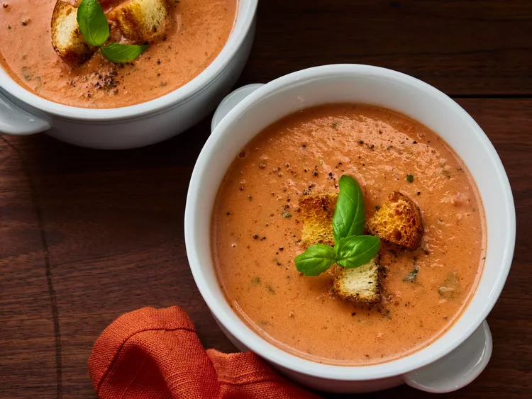

Tamatosoup with fresh Basil

Ingrediens
- Tomatoes: Start with four peeled, seeded, and diced tomatoes.
- Tamato juice: Cook and diced tomatoes in four cups of tomato juice.
- Basil: You'll need 14 leaves of fresh basil.
- Cream: Heavy qhipping cream creats a rich and creamy texture.
- Butter: A stick of butter adds to the richness and lends flavor.
- Seasonings: The tomato basil soup is simply seasoned with sald and pepper.
How do you make Tomatosoup with Basil?
- Simmer th tomatoes in tomato juice
- Remove from heat, stir in the basil, and puree with an immersion blender
- Stir in the cream and butter
- Season and serve hot